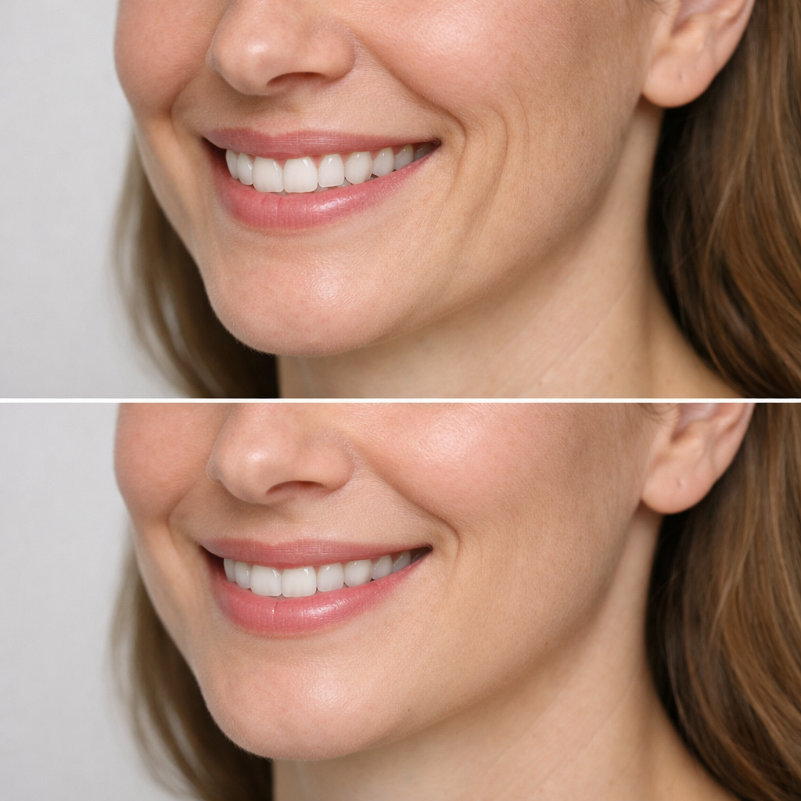
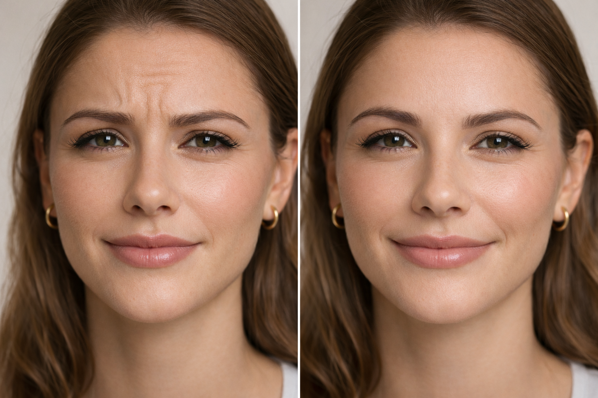
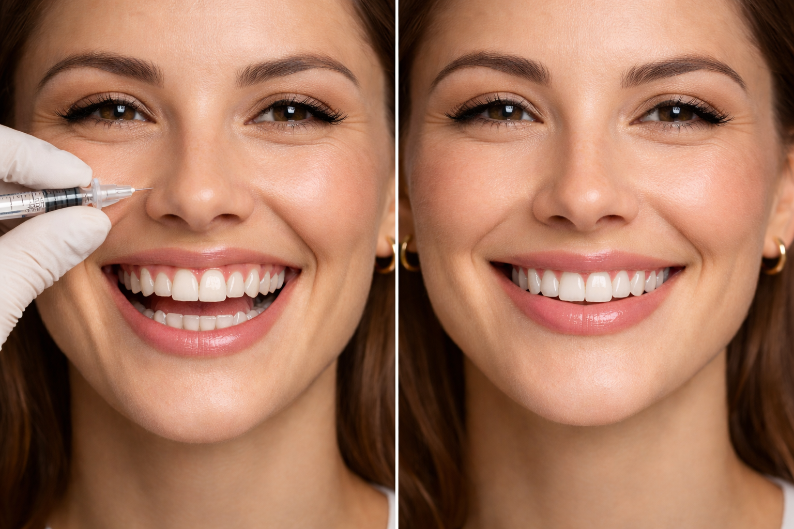
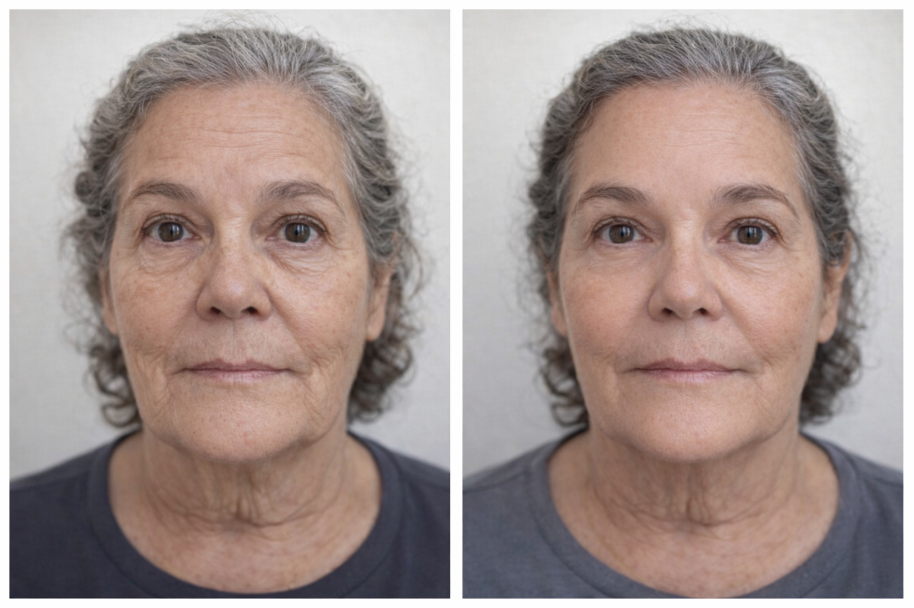

Linhas de expressão
Suavização de marcas dinâmicas preservando naturalidade e harmonia facial.

Suavize linhas de expressão com naturalidade e segurança.
Resposta rápida pelo WhatsApp. Procedimentos realizados após avaliação clínica.
A aplicação de toxina botulínica, popularmente conhecida como Botox®, é um procedimento seguro e eficaz para suavizar rugas e linhas de expressão.
Pacientes de Alphaville e região procuram o procedimento quando desejam naturalidade, segurança e um planejamento que respeite a anatomia de cada caso.

Suavização de marcas dinâmicas preservando naturalidade e harmonia facial.
Tratamento para reduzir contrações excessivas e melhorar o aspecto da testa.
Atenuação das linhas ao redor dos olhos com resultado leve e elegante.
Aplicação estratégica para diminuir a exposição gengival ao sorrir.
Ação terapêutica em casos de apertamento e sobrecarga muscular.
Complemento para equilíbrio facial com indicação cuidadosa e clínica.
O objetivo é suavizar marcas sem endurecer a expressão, preservando identidade e leveza.
Procedimento feito em consultório, com planejamento objetivo e retorno à rotina em pouco tempo.
Além da estética, pode ajudar em queixas funcionais como bruxismo e sobrecarga muscular.



Entendimento do rosto, das queixas e do histórico para definir a indicação correta.
Procedimento realizado em consultório com técnica precisa e foco em conforto.
Planejamento para manter leveza facial sem perder expressão e identidade.
Reavaliação para observar evolução e ajustar a condução do tratamento se necessário.
Quando bem indicada, o foco é suavizar linhas mantendo naturalidade e identidade facial.
Os efeitos aparecem gradualmente, com evolução observada nos dias seguintes à aplicação.
Sim, em casos selecionados pode ser parte da conduta terapêutica para sobrecarga muscular.
Uma condução cuidadosa, com avaliação individual e foco em naturalidade para pacientes de Alphaville e região.
Fale com a clínica para entender a indicação ideal e receber orientação inicial com rapidez. Procedimentos realizados após avaliação clínica.